七区实机对照
概念图给出该区的目标气氛。两张实机图使用同一辆车、同一站位和鼠标朝向。为比较固定的几何与照明，截图时暂停了世界时间。点击图片可检查原图。
回收铸造厂 · A 站
单侧维修臂和绿色信标仍标出停车位，另一侧可以横穿。压机大厅的车道和高窗仍需要靠进深拉开层次。
货运交换站 · 调度厅
站房立面拆开后，高窗、跨厅吊具和调度牌处在同一个视野。托盘移到了装货墙边。
沉没花园 · 滤水岸
滤水轮保留，进水口向岸外伸到水下。旧屋顶和悬空雨棚移除后，轮子上方能看见对岸高架渠。水面仍缺少概念图中近岸阴影和远岸明暗的层次。
试验场 · 后坐力台
测力表跟着试验台，取消罩在仪表外面的屋顶和窗格。上方挡板和侧墙仍占了不少视野。
静默天文台 · 东廊
移走路中的抛光台，能从车道看进下一排设备。柱列与低顶仍压缩视野，重要的反射方向还不够醒目。
循环工场 · 冷却水入口
保留实际连接进水和回水的管组，去掉背后的假建筑。近景管道清楚，远处冷侧与热侧仍容易混淆。
中央熔炉 · 收料位
炉口保留耐火砖、炉排和两侧热光。周围大面积深色砖墙仍缺少概念图中炉心投光的范围。
信号台 · 露天段
这一处用于检查应当保留的远景。天线与天际线无需封闭，前缘屋顶仍遮了一部分视野。
八处通行复测
使用发行版中的坦克移动与地面支撑逻辑，测试工具摆放起点后让坦克横穿原占位。每处各走正反两个方向，路段长 7.2 或 8 个游戏单位。改前十六次都被挡住，距终点还差 6.0–6.6 个单位。改后十六次全部抵达。绿色的维修臂一侧仍有实体柜。
四个维修站分别为 A 旧维修室、B 中央转台、C 东部分配厅、D 炉心维修室。另四处分别是货运调度口的托盘、冲击试验场的残骸、东光廊的抛光台、测距车间的设备柜。
展开 81 组实机图，左侧改前，右侧改后
这些站位在两版均有地面支撑并通过车体碰撞检查。包括额外的维修站、装置、敌人和雷达机位。桥底水路的单独水上视角未列入地面机位。
garden-care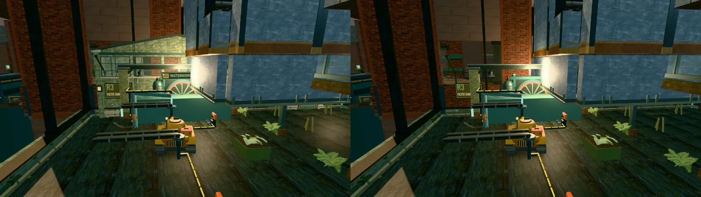
sorting-bay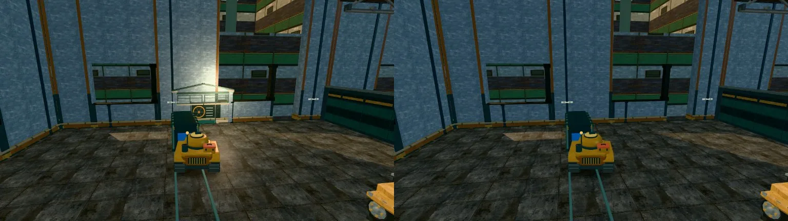
mortar-installation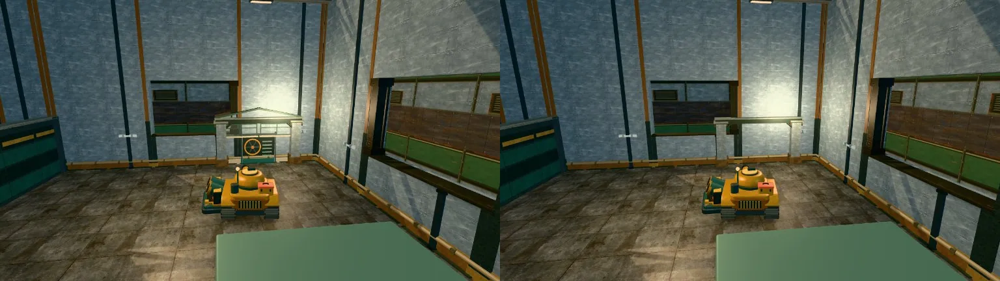
turntable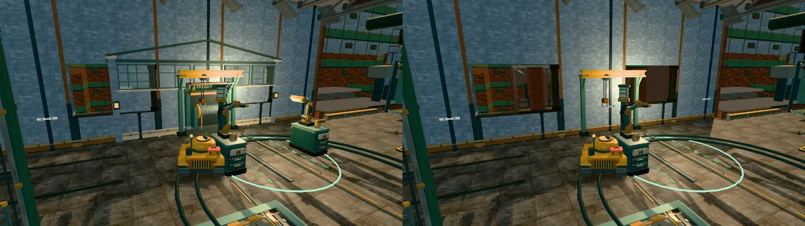
roof-junction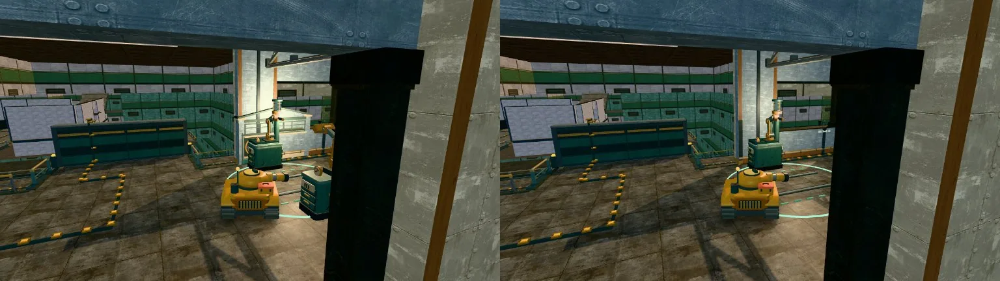
hub-entry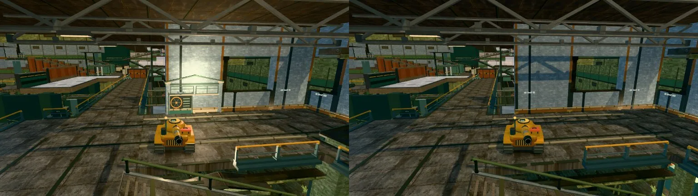
loading-descent-top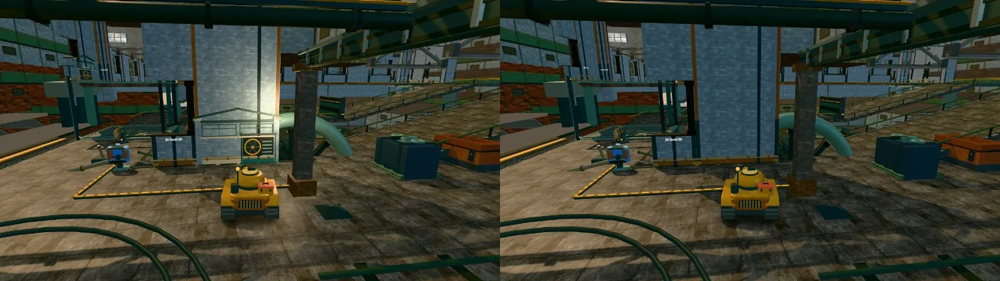
loading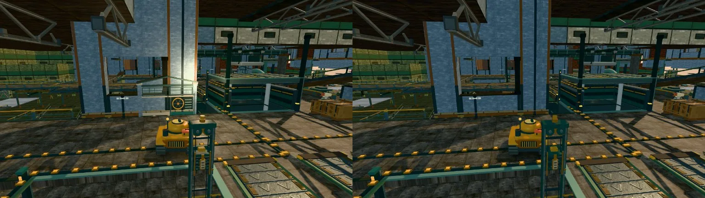
mortar-apron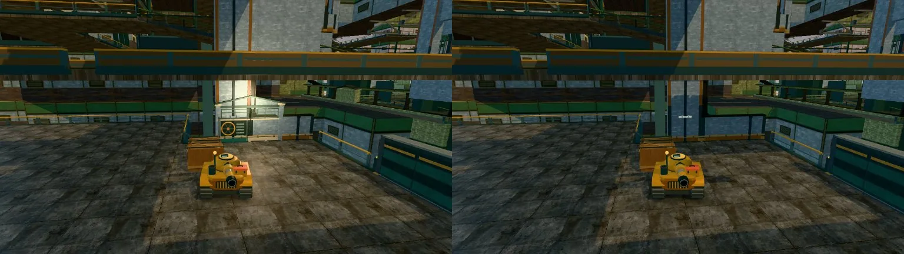
training-gallery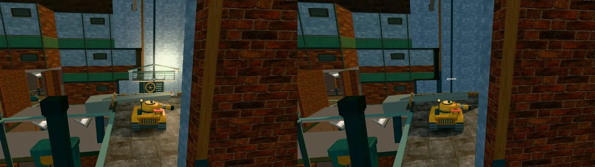
freight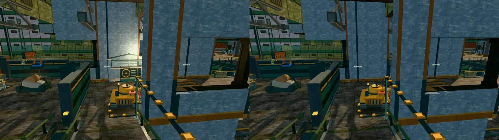
ferry-cradle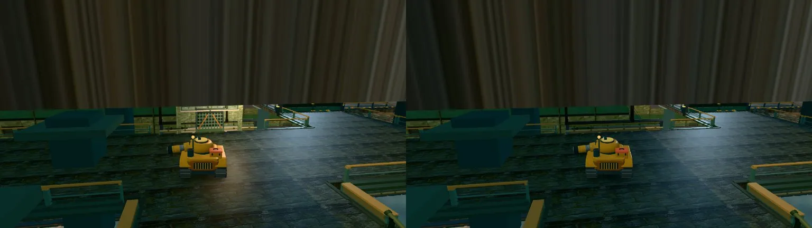
canal-landing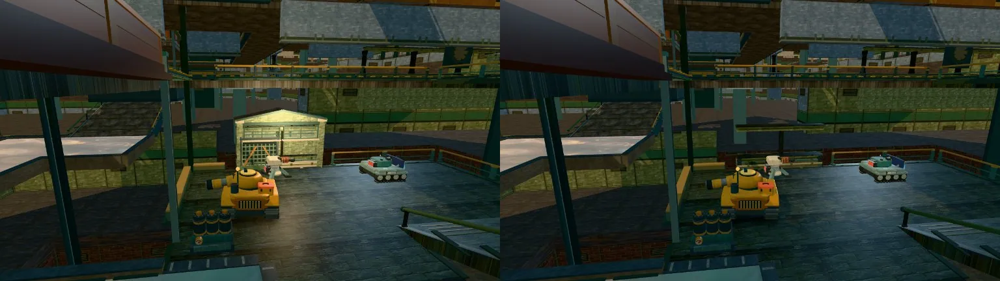
garden-bank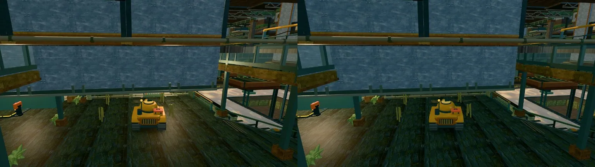
pump-terrace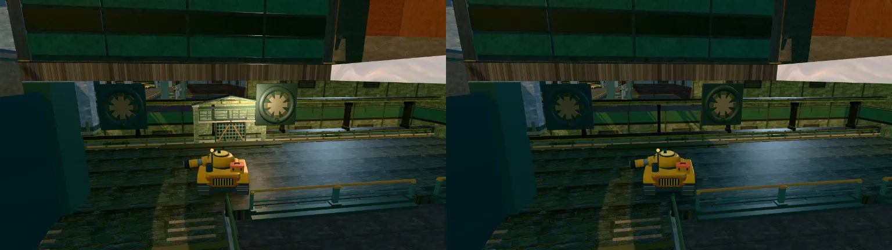
rear-dock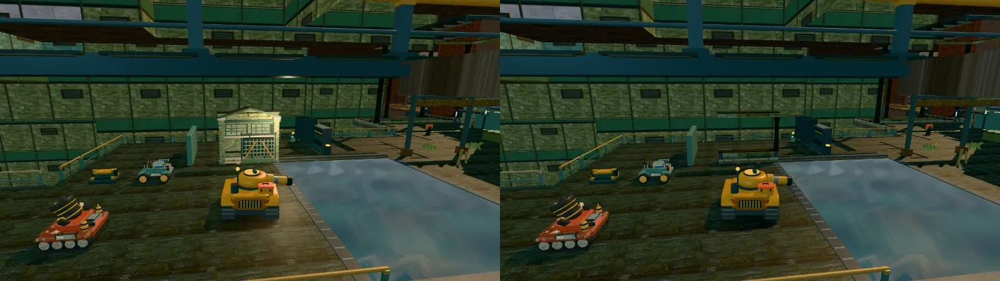
common-benches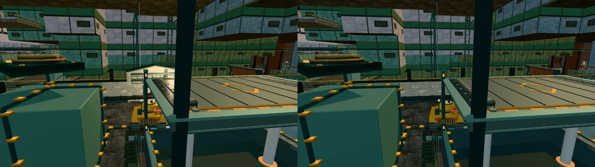
carrier-landing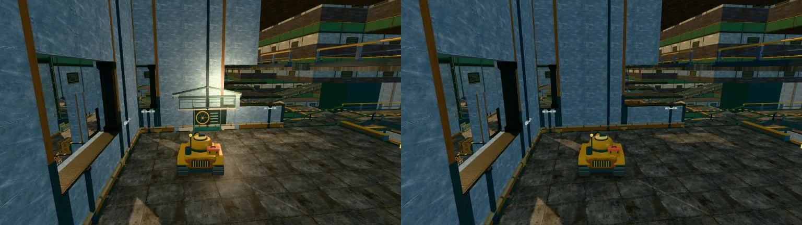
phoenix-cradle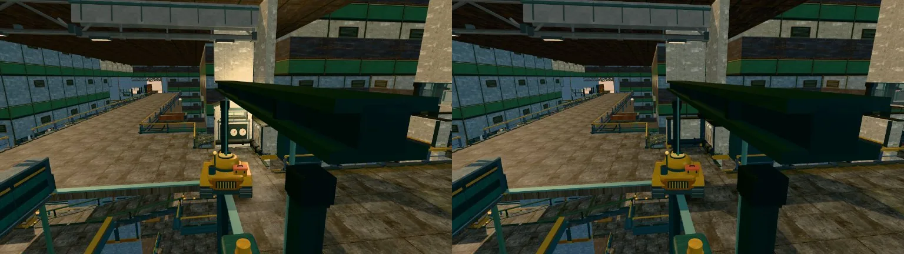
calibration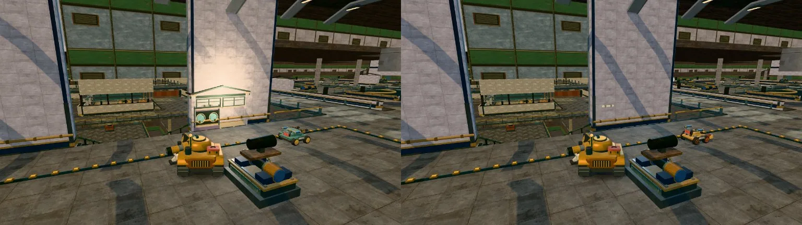
mirror-service-gallery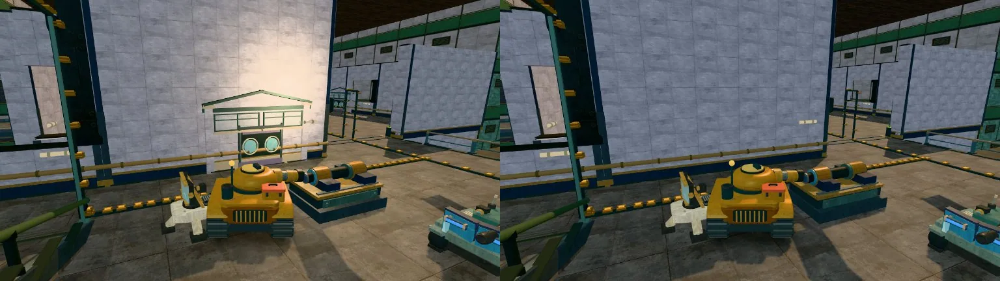
guardian-court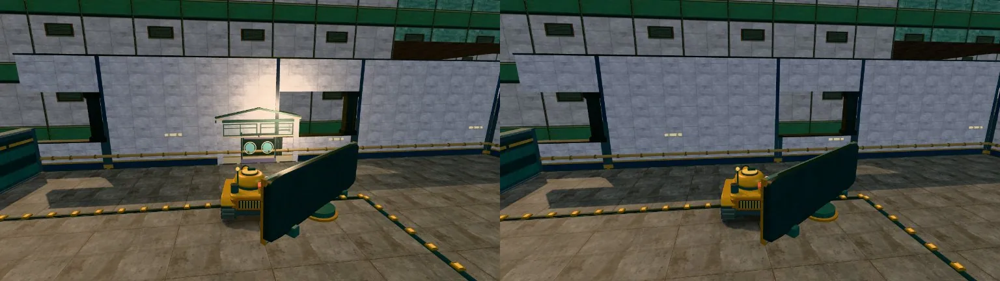
circulation-yard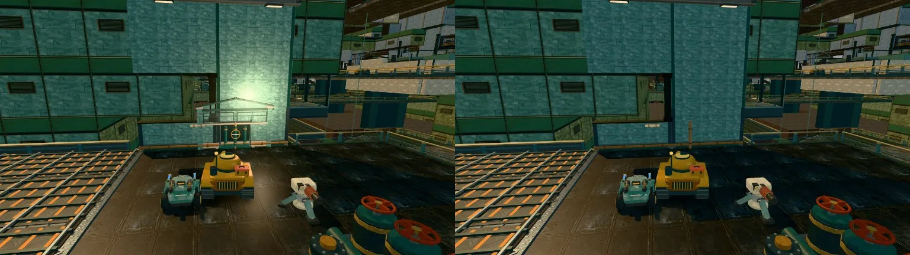
circulation-rig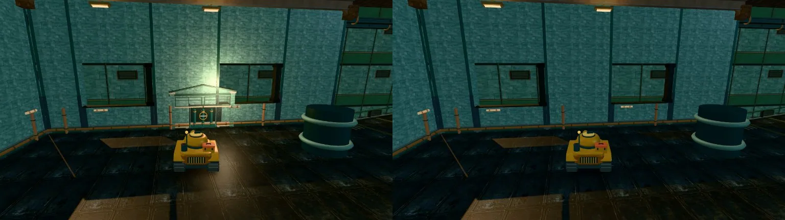
pressure-release-court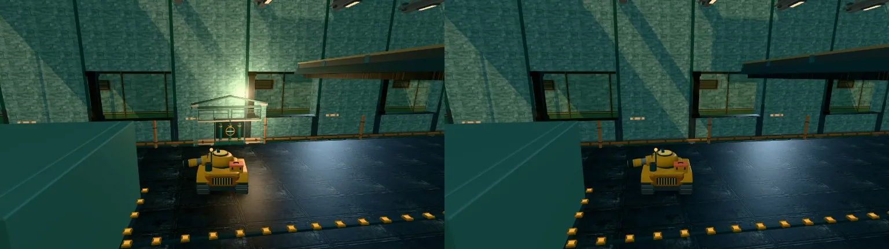
predecessor-gallery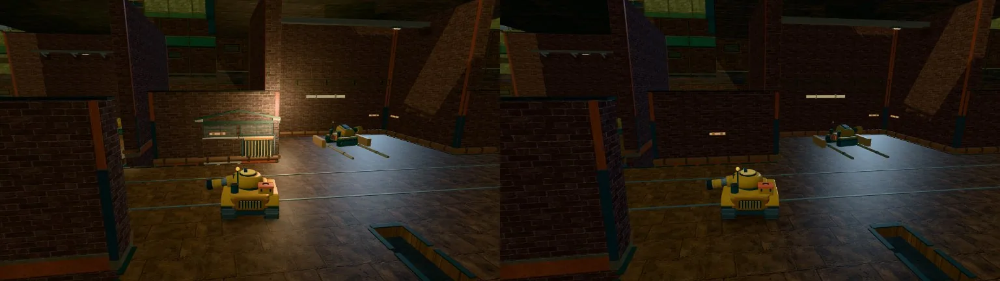
predecessor-mount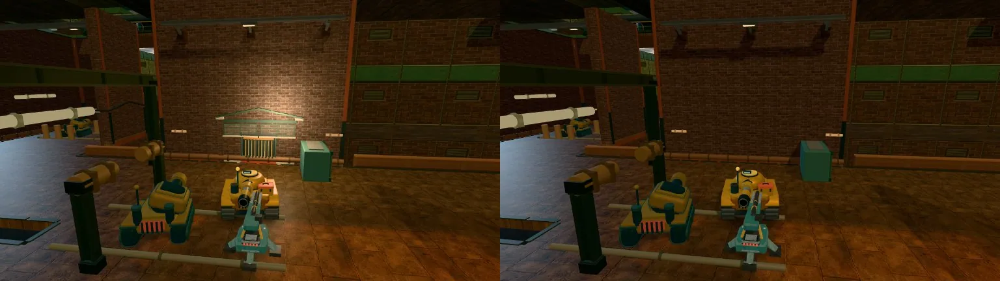
predecessor-cooling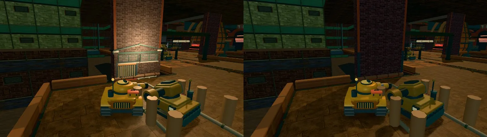
predecessor-dock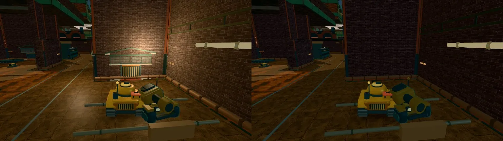
last-refuge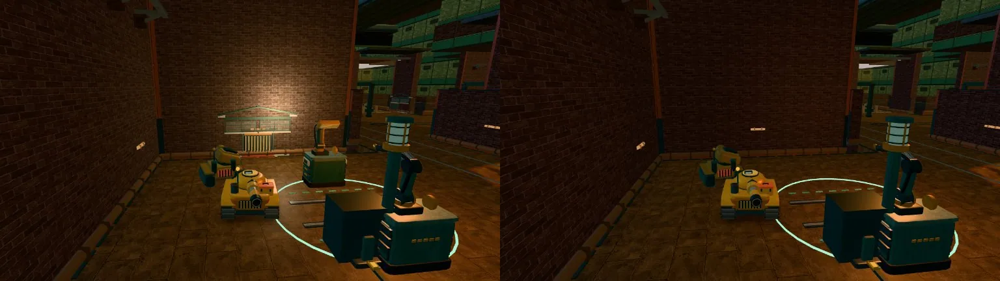
keeper-court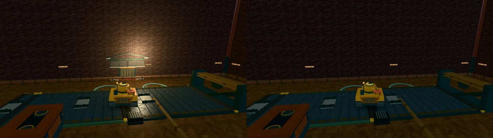
central-furnace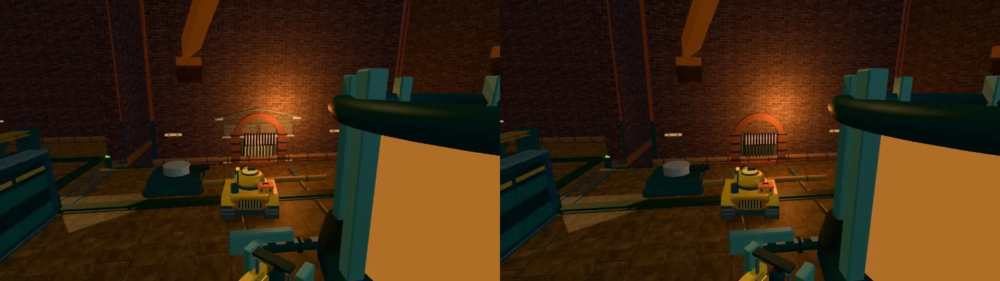
arsenal-dispatch
arsenal-armature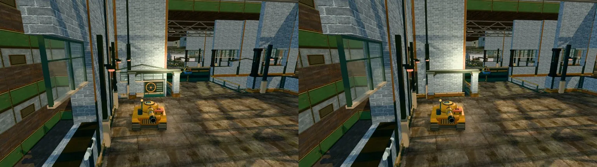
arsenal-rail-shop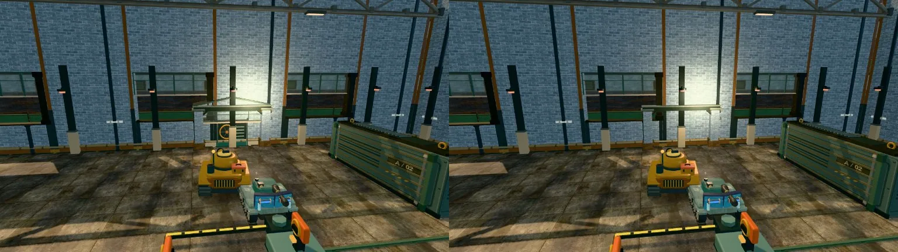
arsenal-inspection
reservoir-east-bank
reservoir-filter-bank
reservoir-drydock
proving-receiving
proving-recoil
proving-impact
proving-observation
proving-repair
proving-engine
lens-vestibule
lens-west-gallery
lens-north-gallery
lens-east-gallery
lens-emitter
coolant-intake
coolant-west-service
coolant-separator
coolant-east-service
coolant-jacket
hearth-receiving
hearth-mounts
hearth-feed
mortar-inspection-room
rangefinder-workshop
crash-runout
crash-recovery
crash-return
mirror-cleaning-hall
mirror-repair-workshop
condensate-pump-room
retired-hull-workshop
opening-route
roof-junction · repair exit
A · Old Repair Room
B · Central Transit
C · Eastern Distribution
D · Furnace Service
Dispatch loading lane
Impact test lane
Lens workshop lane
Rangefinder bench lane
Foundry scout
Dispatch scout
Calibration scout
Signal deck